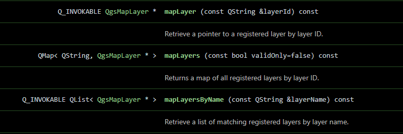

Um die Feature-Auswahl vom Map-Canvas einzurichten, müssen wir einen QField pointHandler registrieren, ähnlich wie ein QgsMapTool in pyQGIS. Dies geschieht in der Hauptcode-Datei demo2_selection.qml.
Dabei lernen wir auch:
Abrufen und speichern Sie einen Verweis auf den pointHandler der QField-Schnittstelle als Klassen-Property.
Item{
id: plugin
property var pointHandler: iface.findItemByObjectName("pointHandler")
}Die onCompleted-Funktion des Root-Items wird ausgelöst, wenn das Plugin lädt.
Item{
id: plugin
property var pointHandler: iface.findItemByObjectName("pointHandler")
Component.onCompleted{
pointHandler.registerHandler("demo2_selection", my_callback);
}
}Wenn Sie das nicht tun, wird Ihr pointHandler Ihre anderen Projekte kontaminieren.
Verwenden Sie Component.onDestruction, um Verhalten beim Schließen zu definieren.
Item{
id: plugin
<...>
Component.onDestruction{
pointHandler.deregisterHandler("demo2_selection");
}
}Unsere Callback-Funktion ist in JavaScript geschrieben. Anstatt eine Funktionsreferenz wie unten zu verwenden, wie es ein Python-Programmierer tun würde:
Item{
id: plugin
<...>
Component.onCompleted{
pointHandler.registerHandler("demo2_selection", my_callback);
}
}ist es üblicher, eine JavaScript-Arrow-Funktions-Syntax zu sehen, wie wir sie in demo2_selection sehen werden
Item{
Component.onCompleted{
pointHandler.registerHandler("demo2_selection", (point, type, interactionType)=>{
iface.logMessage("Interaction Type: " + interactionType)
return true
});
}
}Der boolesche Rückgabewert vom pointHandler-Callback teilt QField mit, ob Ihr Handler das Event verbraucht hat oder nicht:
return true - Event verbraucht
Ihr Handler hat den Klick verarbeitet
return false oder kein return - Event nicht verbraucht
"clicked": Das Auslösen bei Einzelklick kann Konflikte verursachen, da die Feature-Drawer bei einem Einzelklick öffnet.
"doubleClicked": Das Auslösen bei Doppelklick verhindert Konflikte. Wir können die Feature-Drawer bei einem Einzelklick öffnen lassen und mit einem Doppelklick in das Plugin eintreten.
"pressAndHold": Dies wäre theoretisch auch ein schöner Modus zum Öffnen unseres Plugins, aber in der Praxis ist es eine schlechte Wahl
Bedeutet das, dass der boolesche Rückgabewert nicht ganz wie angekündigt funktioniert? Vielleicht. Es gibt auch eine Priorität, die auf pointHandler-Callbacks gesetzt wird, die die Verarbeitung des booleschen Rückgabewerts aus dem Callback beeinflussen kann.
Um Konflikte mit QField zu vermeiden und sicherzustellen, dass unser Plugin in beiden Umgebungen funktioniert, verwenden Sie für die Desktop App clicked, und doubleClicked, wenn wir in iOS sind. Ich habe Android nicht getestet.
Item{
Component.onCompleted{
pointHandler.registerHandler("demo2_selection", (point, type, interactionType) => {
var shouldHandle = (Qt.platform.os === "windows" && interactionType === "clicked") ||
(Qt.platform.os !== "windows" && interactionType === "doubleClicked")
if (shouldHandle) {
iface.logMessage("Platform " + Qt.platform.os)
iface.logMessage("Interaction " + interactionType)
return true // weitere Verarbeitung des Klicks blockieren
}
return false // die Interaktion von QField aufnehmen lassen
});
}
}pointHandler.registerHandler("demo2_selection", (point, type, interactionType) => {
var shouldHandle = ...
if (shouldHandle){
iface.logMessage(point.x)
iface.logMessage(point.y)
}
});pointHandler.registerHandler("demo2_selection", (point, type, interactionType) => {
var shouldHandle = ...
if (shouldHandle){
let coords = iface.mapCanvas().mapSettings.screenToCoordinate(Qt.point(point.x, point.y))
iface.logMessage(coords.x)
iface.logMessage(coords.y)
}
});Wir werden eine räumliche Abfrage auf dem Plots-Layer mit einem Begrenzungsrechteck von 20m um unsere geklickten Koordinaten ausführen. Wenn wir ein Feature in diesem Rechteck finden, werden wir das Plugin aktivieren und die Plot-ID des Features an unsere Plugin-Component übergeben.
Sie können eine Teilmenge der QGIS-API-Funktionen von QField und JavaScript aufrufen. Sie können herausfinden, welche Funktionen von QField aufgerufen werden können, indem Sie zur QGIS C++ Class Reference für die Klasse gehen, an der Sie interessiert sind. Funktionen, die Sie aufrufen können, sind mit Q_INVOKABLE gekennzeichnet.

Wir holen den Map-Layer aus der QgsProject-Instanz, die in QField als qgisProject verfügbar ist, das mit org.qgis importiert wurde.
pointHandler.registerHandler("demo2_selection", (point, type, interactionType) => {
var shouldHandle = ...
if (shouldHandle){
let layer = qgisProject.mapLayersByName("plots")[0]
iface.logMessage("Got plots layer")
}
});getFeatures ist noch keine aufrufbare QGIS-Funktion. Stattdessen können wir einen Ausdruck übergeben, um einen Feature-Iterator aus QFields LayerUtils-Klasse zu erhalten, die aus org.qfield importiert wird.
Wir werden unseren Plots-Layer nach dem Feature mit plot_id = 'b.1' abfragen.
Wir werden dieses Feature abrufen und seine Plot-ID ausgeben. (Noch nicht unsere Koordinaten verwenden.)
pointHandler.registerHandler("demo2_selection", (point, type, interactionType) => {
var shouldHandle = ...
if (shouldHandle){
var layer = qgisProject.mapLayersByName("plots")[0]
var expression = "plot_id = 'b.1'";
let it = LayerUtils.createFeatureIteratorFromExpression(layer, expression)
if (it.hasNext()){
feature = it.next()
plot_id = feature.attribute("plot_id")
iface.logMessage("found the feature of the plots layer: " + plot_id)
}
it.close(); // NIEMALS vergessen, Ihren Iterator zu schließen
return true
}
return false
});Wir werden ein Begrenzungsrechteck von 20m um unsere Interaktionskoordinaten erstellen. Wir werden die Begrenzungsrechteck-Koordinaten verwenden, um eine Schnittmengen-Abfrage an LayerUtils zu übergeben, anstelle unserer einfachen Abfrage.
if (shouldHandle) {
// Erstelle ein Paar von Punkten, die einen Pufferbereich darstellen, in dem Features gesucht werden sollen.
let tl = mapCanvas.mapSettings.screenToCoordinate(Qt.point(point.x - 20, point.y - 20))
let br = mapCanvas.mapSettings.screenToCoordinate(Qt.point(point.x + 20, point.y + 20))
let expression = "intersects(geom_from_wkt('POLYGON(("+tl.x+" "+tl.y+", "+br.x+" "+tl.y+", "+br.x+" "+br.y+", "+tl.x+" "+br.y+", "+tl.x+" "+tl.y+"))'), $geometry)"
let it = LayerUtils.createFeatureIteratorFromExpression(qgisProject.mapLayersByName("plots")[0], expression)
if (it.hasNext()) {
const feature = it.next()
console.log(feature.id + " " + feature.attribute("plot_id"))
}
it.close();
}
return falseDie Loader-Klasse hat die Property "item", die das Item enthält, das von seiner Source-Component geladen wurde.
In unserer Plugin-Component haben wir eine plotId-Property definiert. Das direkte Setzen dieser Property auf pluginLoader.item löst eine QML-Property-Bindung in der Plugin-Component aus, die die Anzeige automatisch aktualisiert.
Denken Sie daran, den Iterator zu schließen, unabhängig davon, ob das Feature gefunden wird oder nicht!
Denken Sie daran, den booleschen Wert für den pointHandler zurückzugeben.
pointHandler.registerHandler("demo2_selection", (point, type, interactionType) => {
// ...
if (shouldHandle) {
// ...
if (it.hasNext()) {
// Holen Sie Ihr Feature
const feature = it.next()
// Schließen Sie Ihren Iterator
it.close()
// Schalten Sie das Plugin ein, genau wie die Kamera-Schaltfläche
pluginLoader.active = true
// Übergeben Sie die Plot-ID an die Plugin-Component
pluginLoader.item.plotId = feature.attribute("plot_id")
// Blockieren Sie das Interaktionssignal
return true
}
// Schließen Sie den Iterator, wenn Sie kein Feature finden
it.close();
}
// Geben Sie die Interaktion weiter
return false
});parent geändert gegenüber Demo 1In Demo 1 verwendete das Root-Item parent: iface.mapCanvas(). Hier wird stattdessen parent: iface.mainWindow().contentItem verwendet. Dies ist erforderlich, weil der Plugin-Dialog das gesamte QField-Fenster überlagern muss, nicht nur den Kartenbereich darin. mapCanvas() schneidet Kind-Items auf das Kartenrechteck zu, was Teile der Plugin-Oberfläche verbergen würde. mainWindow().contentItem ist die Vollbild-Oberfläche, die alle QField-UI-Elemente gemeinsam nutzen.
// imports
Item {
id: plugin
parent: iface.mainWindow().contentItem
anchors.fill: parent
// Map Selection: 1. Halten Sie einen Verweis auf das Map-Canvas
property var mapCanvas: iface.mapCanvas()
// Map Selection: 2. Fügen Sie den pointHandler zum Plugin hinzu
property var pointHandler: iface.findItemByObjectName("pointHandler")
Loader {
id: pluginLoader
// ...
}
Component.onCompleted: {
// Map Selection: 3. Registrieren Sie den pointHandler und definieren Sie seinen Callback
pointHandler.registerHandler("demo2_selection", (point, type, interactionType) => {
// Entscheiden Sie über die Interaktion
var shouldHandle = (Qt.platform.os === "windows" && interactionType === "clicked") ||
(Qt.platform.os !== "windows" && interactionType === "doubleClicked")
if (shouldHandle) {
// Erstellen Sie ein Paar von Punkten, die einen 20m-Pufferbereich darstellen, in dem Features gesucht werden sollen.
let tl = mapCanvas.mapSettings.screenToCoordinate(Qt.point(point.x - 20, point.y - 20))
let br = mapCanvas.mapSettings.screenToCoordinate(Qt.point(point.x + 20, point.y + 20))
// Führen Sie eine räumliche Abfrage aus
let expression = "intersects(geom_from_wkt('POLYGON(("+tl.x+" "+tl.y+", "+br.x+" "+tl.y+", "+br.x+" "+br.y+", "+tl.x+" "+br.y+", "+tl.x+" "+tl.y+"))'), $geometry)"
let it = LayerUtils.createFeatureIteratorFromExpression(qgisProject.mapLayersByName("plots")[0], expression)
if (it.hasNext()) {
// Sie haben ein Feature, spielen Sie damit! :)
const feature = it.next()
console.log(feature.id)
it.close()
pluginLoader.active = true
// Übergeben Sie die Plot-ID an die Plugin-Component
pluginLoader.item.plotId = feature.attribute("plot_id")
return true
}
it.close();
}
return false
});
}
// Map Selection: 4. Deregistrieren Sie den pointHandler bei Destruktion (sollte beim Projektschluss sein)
Component.onDestruction: {
pointHandler.deregisterHandler("demo2_selection");
}
}Das war viel. Schauen wir uns an, wie diese Plot-ID zur MessageBox gelangt. Dieser Teil ist ziemlich einfach.